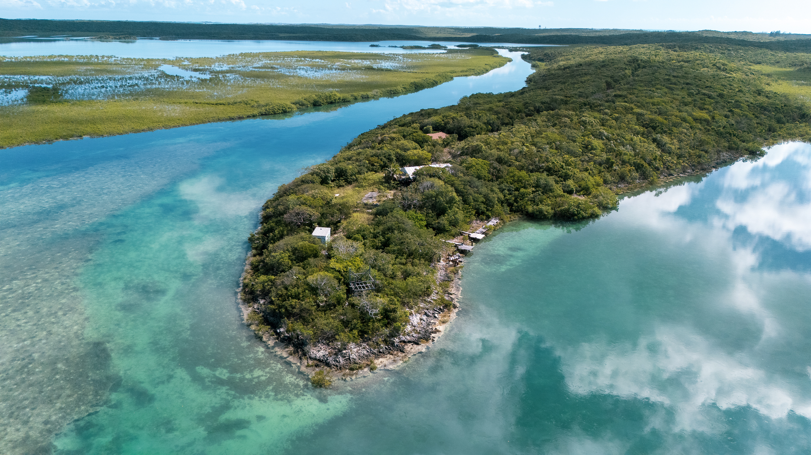
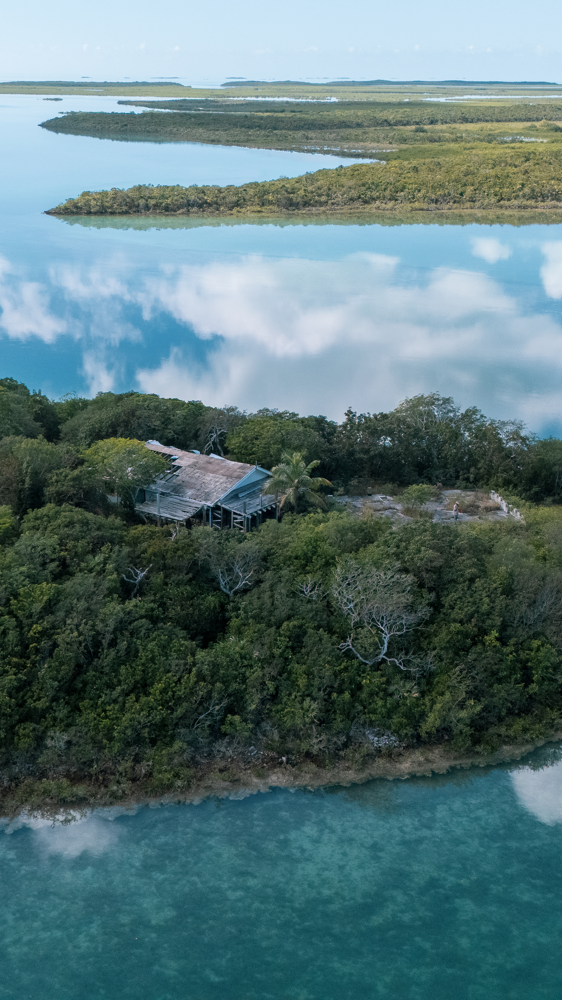
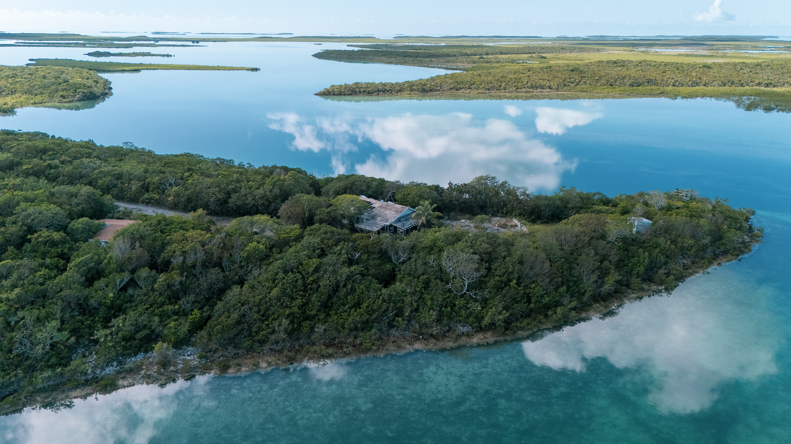
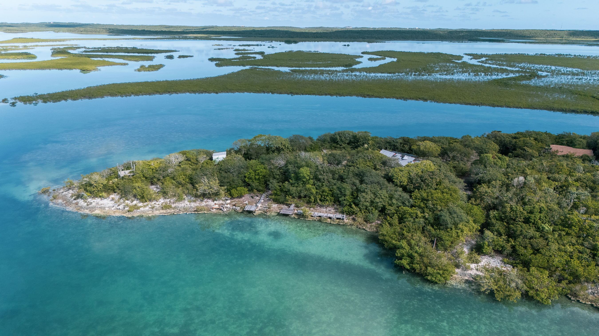
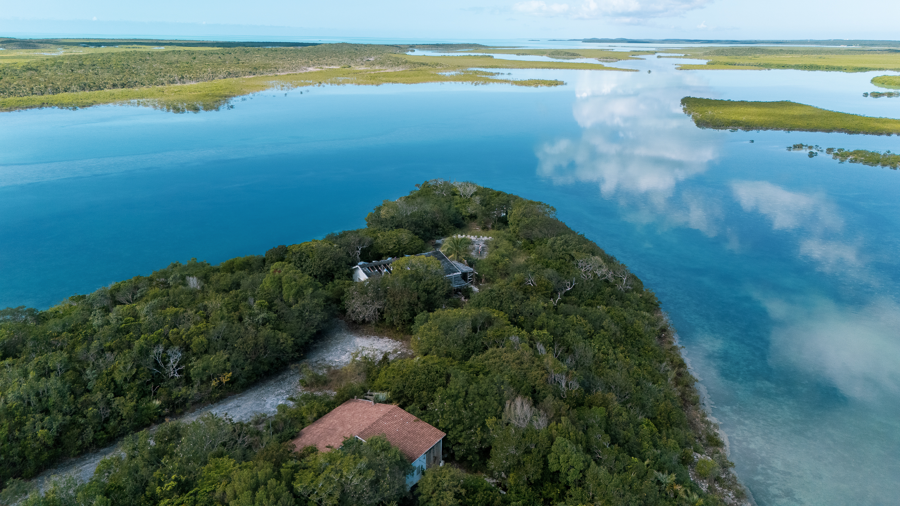
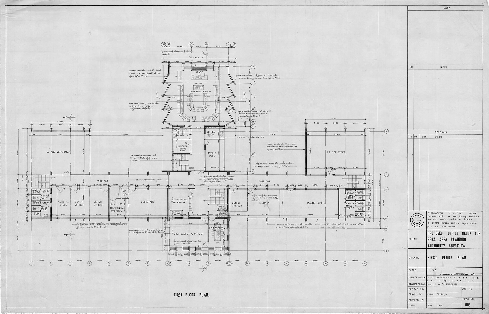
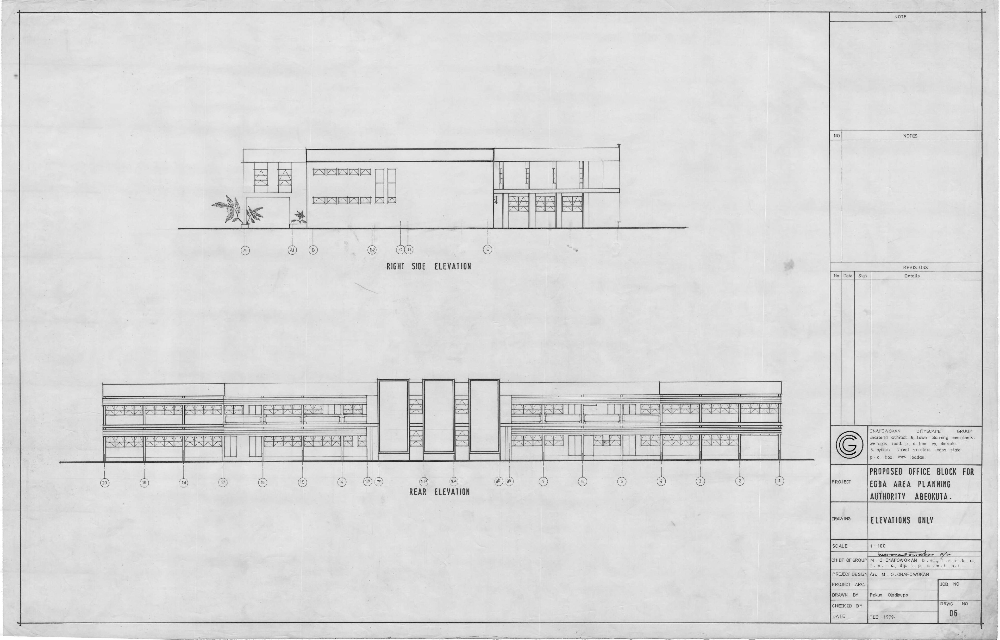

Bahamas — 23°58'02"N, 77°31'30"W
Exuma Lodge
La propuesta se implanta con una lógica de bajo impacto sobre el terreno, elevando los espacios habitables y priorizando materiales durables frente al ambiente salino.
La arquitectura organiza las áreas comunes y privadas alrededor de patios de aire y recorridos exteriores cubiertos, sosteniendo confort térmico con mínima dependencia mecánica.
Análisis climático
Clima · Bahamas
Las Bahamas se ubican en la zona de clima tropical de sabana, con temperaturas estables durante todo el año y una marcada estacionalidad en las lluvias. Estas condiciones —calor sostenido, alta humedad y vientos constantes del este— definen las decisiones estructurales del proyecto: orientación, materialidad y estrategia de ventilación responden directamente al comportamiento climático del sitio.
Aw
Clasificación Köppen
Tropical Savanna
21–30 °C
Temperatura anual
Rango mín. invierno — máx. verano
70–79%
Humedad relativa
Seca — Húmeda
5.29 m/s
Viento promedio
N/NO invierno · E/SE verano
Exploración espacial
Plano 3D interactivo
Modelo tridimensional de la vivienda con simulación de ciclo solar, ventilación cruzada y distribución de ambientes. Interactuá con el modelo para explorar cada espacio.


Solar Radiation
Monthly solar energy intensity (Wh/m²). The gold portion represents diffuse radiation; the orange, direct.
Wind Rose
Wind frequency and intensity by direction. Longer petals indicate higher frequency; color indicates average speed (blue = slow, red = fast).

Monthly Rainfall
Average monthly precipitation (mm). The shaded band marks the wet season (RA+, Apr–Sep); remaining months correspond to the dry season (RA−).
Respuesta al clima
Estrategias de diseño
Ventilación cruzada
La orientación de los volúmenes capitaliza los vientos del E/SE para favorecer ventilación natural permanente.
Protección solar
Voladizos y galerías profundas bloquean la radiación de alta intensidad del verano, permitiendo entrada de luz difusa.
Gestión hídrica
La alta pluviometría de la temporada húmeda (hasta 109 cm) se integra al diseño como recurso, con captación en cubierta y drenaje controlado.



